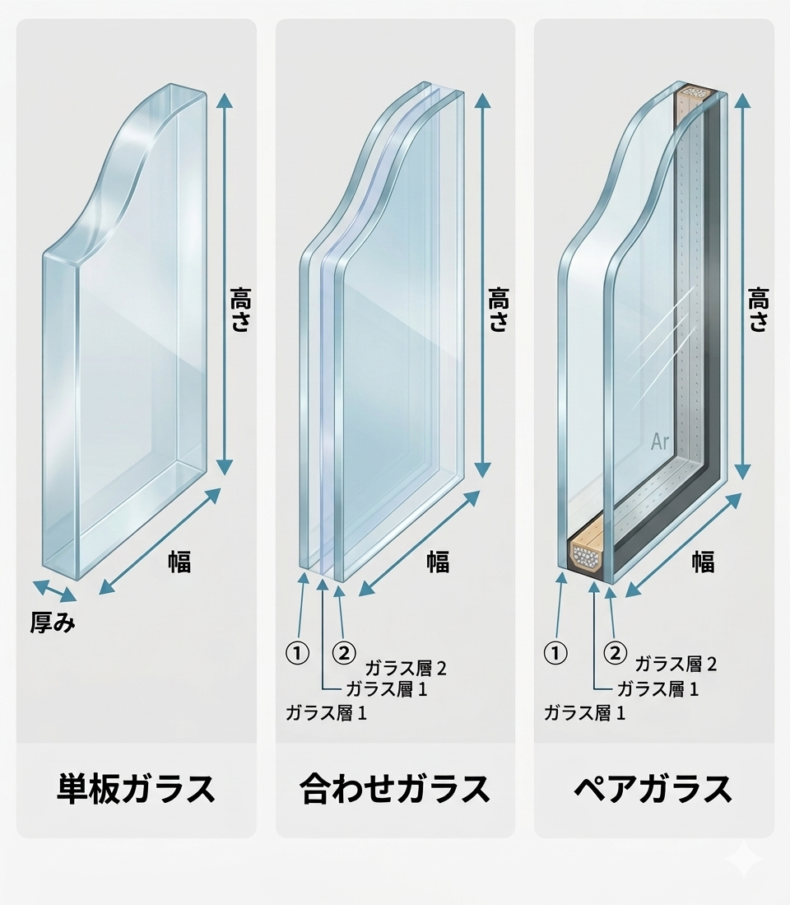

ガラス重量 自動計算ツール（単板・合わせ・ペアガラス）
ガラスの種類を選び、幅・高さ・厚みを入力するだけでガラスの重量（kg）を自動計算します。単板ガラス・合わせガラス・ペアガラス（複層ガラス）に対応。施工前の重量確認や、運搬・取付け時の人数検討などにご利用ください。

単板ガラスは1枚のガラスです。厚みを1つ入力してください。
ガラスの種類と厚みの入れ方
3種類の違い
- 単板ガラス：1枚のガラス。厚みを1つだけ入力します。
- 合わせガラス：2枚のガラスを中間膜（フィルム）で貼り合わせたもの。厚み①・厚み②に各ガラスの厚みを入力します。中間膜は軽量なため、重量計算では無視します。
- ペアガラス（複層ガラス）：2枚のガラスの間に中空層（空気・ガス）を設けたもの。厚み①・厚み②に各ガラスの厚みを入力します。中空層は空気なので重量はほぼゼロとして無視します。
※合わせ・ペアとも、重量は「2枚のガラス厚の合計」で計算します（中間膜・中空層ぶんは含めていません）。
ガラスの重さの計算公式
このツールは一発で重さが分かりますが、計算式そのものはとてもシンプルです。ガラスの重さは「幅 × 高さ × 厚み × 比重(2.5)」で求められます。単位の取り方で割る数が変わります。
| 寸法の単位 | 重量の公式（kg） |
|---|---|
| ミリ（mm） | 幅 × 高さ × 厚み × 2.5 ÷ 1,000,000 |
| センチ（cm） | 幅 × 高さ × 厚み × 2.5 ÷ 1,000 |
※本ツールは入力単位をミリ（mm）に統一しています。合わせ・ペアガラスでは「厚み」に2枚分の合計（厚み①＋厚み②）を用います。
重量 W（kg）＝ 幅(mm) × 高さ(mm) × 厚み(mm) × 2.5 ÷ 1,000,000
たとえば、幅900mm・高さ1800mm・厚み5mmの単板ガラスなら、
900 × 1800 × 5 × 2.5 ÷ 1,000,000 ＝ 20.25 kg となります。
ガラスの比重とは
比重とは、ある物質の密度を水の密度で割った値で、単位は g/cm³。水と同じ体積のとき、その物質が何倍重いかを表す指標です。
- 水の比重 ＝ 1
- ガラスの比重 ＝ 2.5（＝ 同じ体積の水の2.5倍重い）
このため、ガラスの重さ計算では比重2.5を掛けています。なお、網入りガラスや特殊ガラスでは比重がわずかに異なる場合があります。
ご注意
本ツールの結果は比重2.5を用いた概算（中間膜・中空層・面取り等は考慮しません）です。製品の正確な重量・仕様は、メーカーのカタログや見積で必ずご確認ください。運搬・取付けの安全計画は、余裕をみて検討してください。